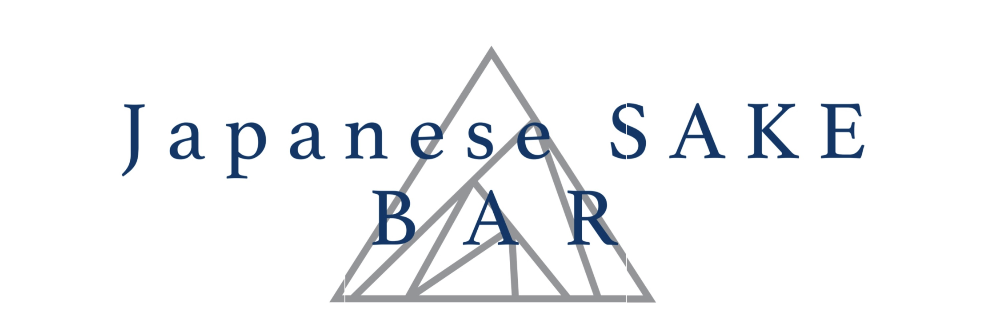

日本酒を、もっと自由に。
🥂SAKE in Kyoto mood🥂
Open 2:00PM～11:00PM
（Closed on Thursdays）
No Charge｜English OK
住所：
〒605-0077
京都府京都市東山区廿一軒町２３３ KONAビル ２F
電話：075-551-2538
営業時間：14:00〜23:00
定休日：木曜
Address: 2F KONA Bldg., 233 Nijuken-cho,
Higashiyama-ku, Kyoto 605-0077
Tel: 075-551-2538
Opening Hours: 2:00 PM - 11:00 PM
Closed on: Thursdays
Tel +81-75-551-2538
(Open: 2:00 PM-11:00 PM/Closed on: Thursdays)